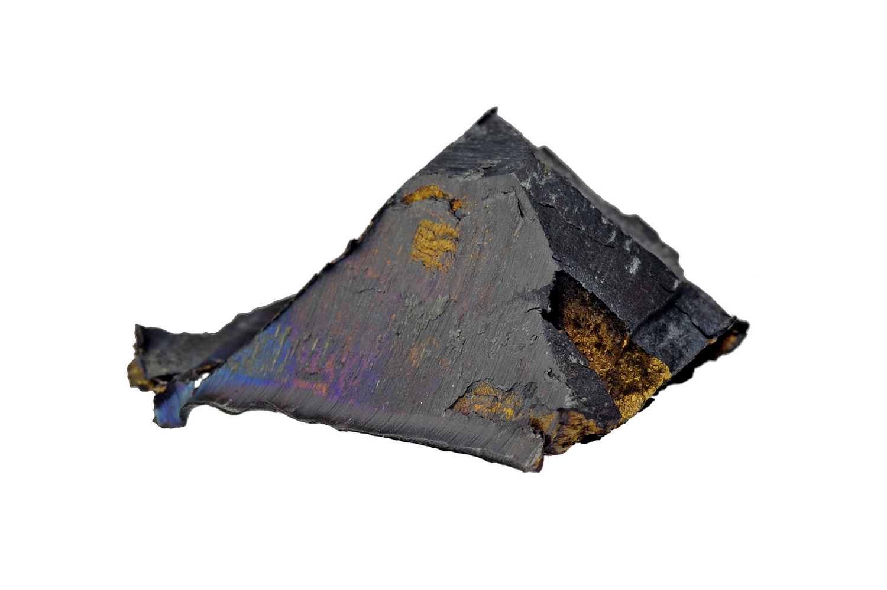

The Cerium(Ce)
Characteristic:
Cerium is a silvery-white, soft, and fairly reactive metal.
It is easily oxidized in air, forming an oxide patina on the surface.Is the most abundant lanthanide in the Earth's crust.
Major producing countries with large reserves are:
China
Brazil
India
Russia
United States
Vietnam
Furthermore, it can remain stable for a long time in the environment, especially in industrial sludge.
Cerium information:
Element name: Cerium
Atomic mass: 140.12 u
Atomic number: 58
Number of isotopes: Cerium has 4 stable isotopes, but there are several radioactive isotopes.
Mass number (isotopes): The stable isotopes of cerium are:
Cerium-140 (140)
Cerium-142 (142)
Cerium-143 (143)
Cerium-144 (144)
Cerium-145 is a radioactive isotope.
Melting point: 798 °C
Boiling point: 3,230 °C
Density: 6.77 g/cm³
Electronegativity: 1.12 (Pauling scale)
ear of discovery: 1803
Discoverers: Jöns Jakob Berzelius and Wilhelm Hisinger
